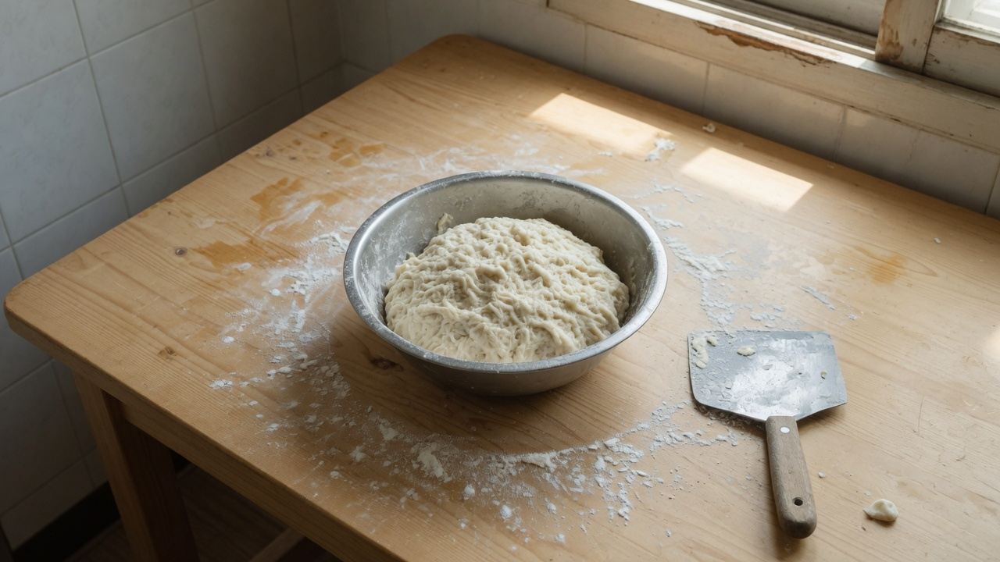
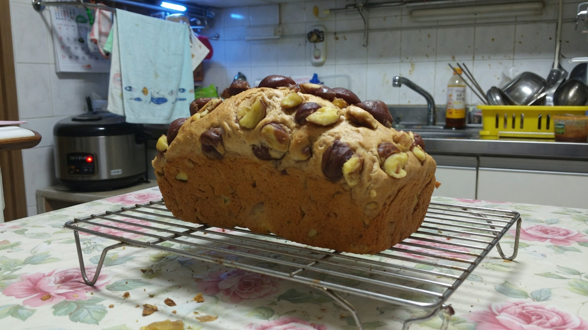
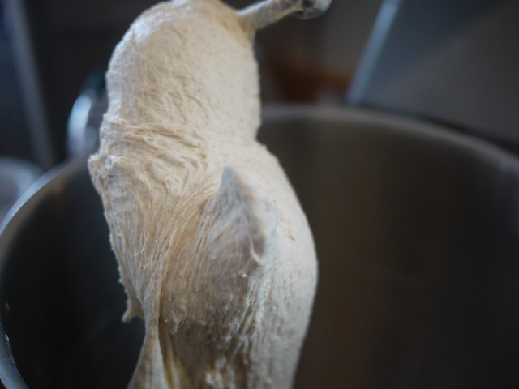

제빵기능사 시리즈
제빵기능사 시리즈 — 6편 목차와 읽는 순서
제빵기능사 준비·시험·합격 경험을 6편으로 나눕니다. 6편 모두 발행. 각 편에서 다룰 내용과 읽는 순서, 시리즈 이후 빵 R&D로의 연결을 정리했습니다.
기능사 시리즈와 빵 R&D 일지
최근 발행·수정 기준

제빵기능사 준비·시험·합격 경험을 6편으로 나눕니다. 6편 모두 발행. 각 편에서 다룰 내용과 읽는 순서, 시리즈 이후 빵 R&D로의 연결을 정리했습니다.

밤식빵 R&D 1~8차 일지를 따라 하기 어렵다면 이 글부터 보세요. 토핑 시점·수분·보관·시럽·재료·브러싱에서 확인된 것과 아직 남은 것을 표처럼 정리했습니다. 레시피가 아니라 집 오븐에서 쓸 수 있는 판단 기준입니다.
2026년 1월 12일, 8차에서 가장 가까웠던 조합을 겨울 난방 실내에서 재현했습니다. 변수는 발효 시간 보정뿐이었고, 다음 날 식감은 여름 8차와 비슷했으나 겉 건조가 소폭 심해졌습니다.

제빵기능사 시리즈 6편을 한 장 분량으로 압축했습니다. 시험 구조, 월별 초점, 실기·필기에서 망한 포인트, 시험 당일 체크리스트를 표처럼 정리합니다. 2024~2025 제 경험 기준이며 최신 일정은 공식 공고를 확인하세요.

2025년 11월 5일, 7차 조건을 유지한 채 굽기 직후 6차 시럽에 물 한 스푼을 섞어 표면에 얇게 발랐습니다. 윤기와 밀착이 소폭 나아졌고 단맛은 6차 수준을 유지했습니다.

2025년 10월 22일, 6차까지 맞춰 둔 조건을 유지하고 통조림 밤 대신 직접 삶아 껍질을 벗긴 신선 밤을 올렸습니다. 향과 식감은 나아졌으나 크기 편차로 덩어리감은 들쭉날쭉했습니다.
정지석이 정리한 관점·편집 메모
밤식빵 R&D와 기능사 글에서 완성 레시피·그램 표를 의도적으로 넣지 않습니다. 제 오븐·반죽량 기준을 그대로 옮기면 어긋날 수 있어서이며, 대신 일지에서 검증된 순서와 판단 기준을 남기기 위함입니다.
밤식빵 R&D는 2025년에 실험하고 2026년에 글로 정리했습니다. 날짜를 나누는 이유, 메모 4칸을 글 구조로 바꾸는 방법, 완벽한 글을 기다리지 않는 이유를 적습니다.
밤식빵 R&D 초반, 매번 '맛있는 빵'을 기대한 가족에게 실패 빵을 내놓는 일이 반복됐습니다. 기대치를 맞추기 위해 말해둔 약속과, 실패도 기록으로 남기는 이유를 적습니다.
시리즈 입문과 목차
밤식빵 R&D 1~8차 일지를 따라 하기 어렵다면 이 글부터 보세요. 토핑 시점·수분·보관·시럽·재료·브러싱에서 확인된 것과 아직 남은 것을 표처럼 정리했습니다. 레시피가 아니라 집 오븐에서 쓸 수 있는 판단 기준입니다.

2025년 6월~8월 밤식빵 R&D 1~5차를 한곳에 모아 비교했습니다. 토핑 시점·수분·보관·시럽 졸임에서 무엇이 나아졌고, 기억과 아직 다른 지점은 어디인지 정리합니다.

2025년 6월, 합격 후 첫 밤식빵 실험 기록입니다. 식빵 반죽은 기능사 때와 동일, 밤 시럽 농도만 변경. 겉은 비슷했지만 속 촉촉함과 밤 식감이 기억과 달랐고, 다음 변수를 정했습니다.

2025년 5월 제빵기능사 시험 당일을 전날 준비·당일 필기·실기 간격·컨디션 관리 순으로 기록했습니다. 합격 직후 바로 한 정리와, 시험 후에야 알게 된 아쉬움도 함께 적습니다.
오류 제보, 콘텐츠 관련 문의는 이메일로 연락해 주세요.
onhopetoj@gmail.com